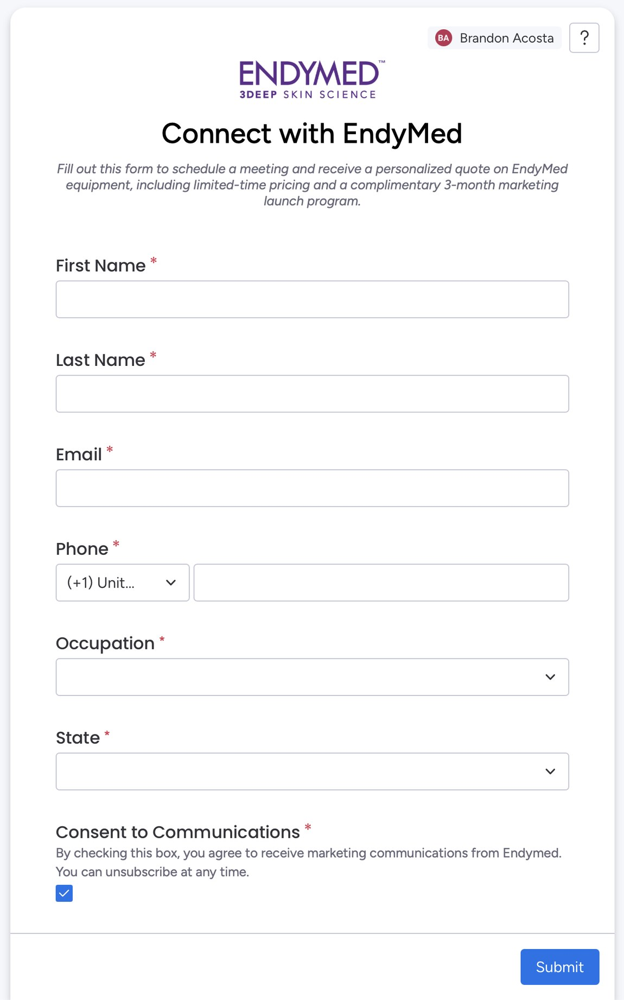
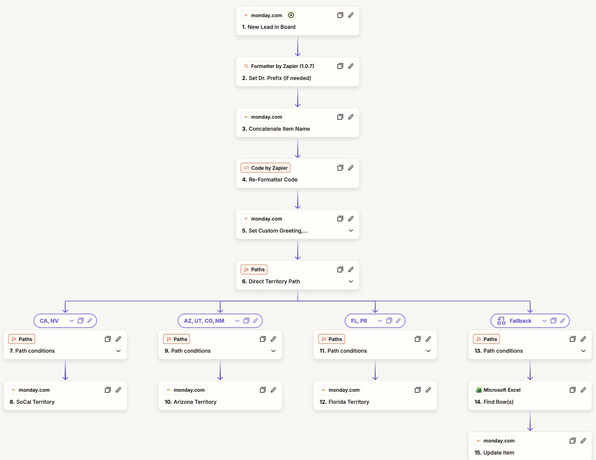
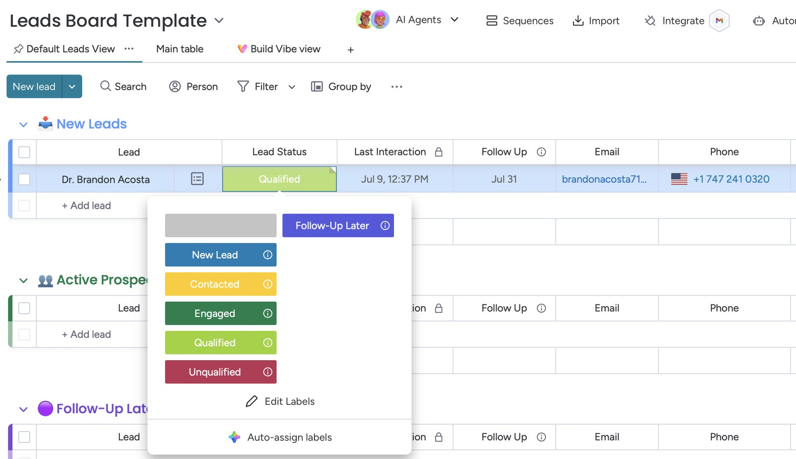
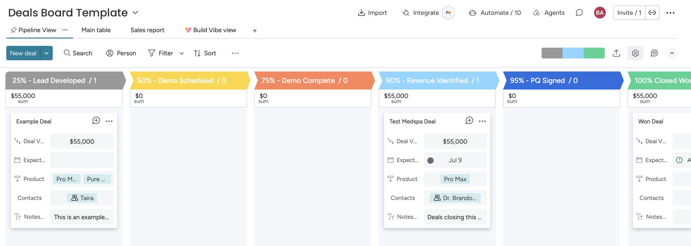
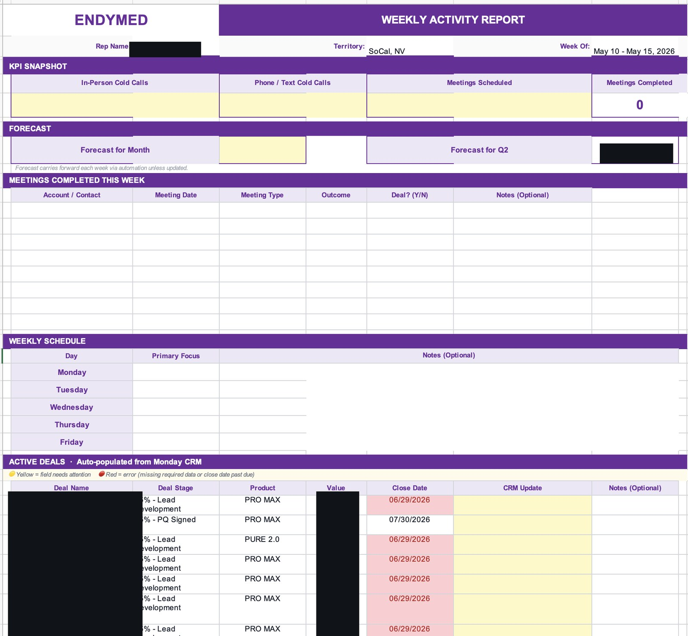
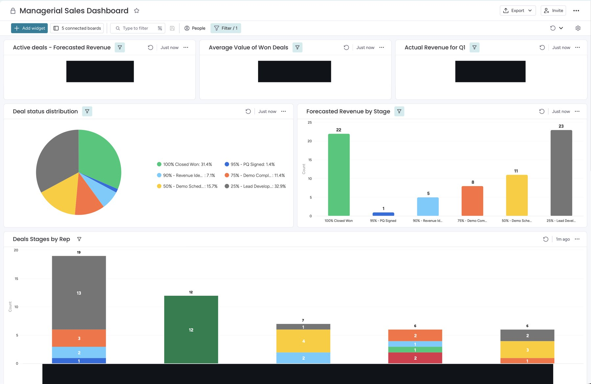
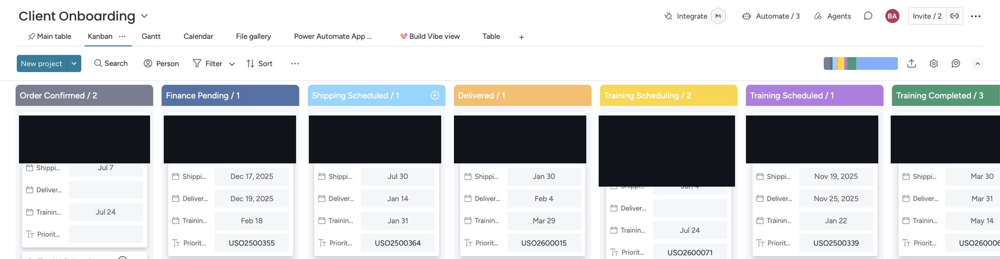
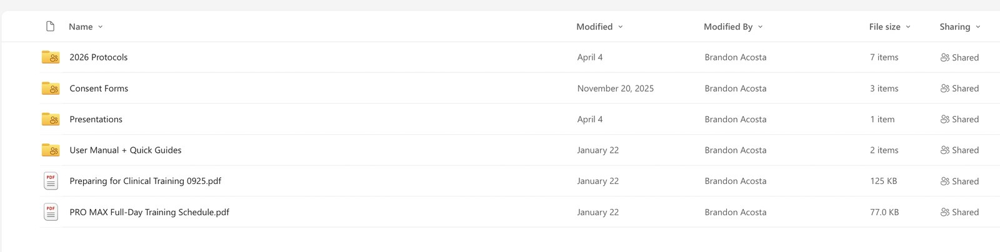
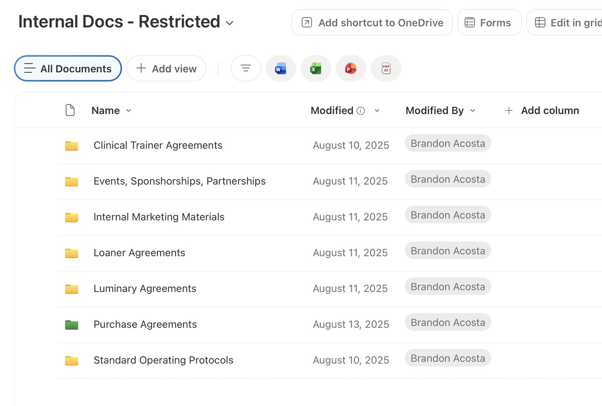
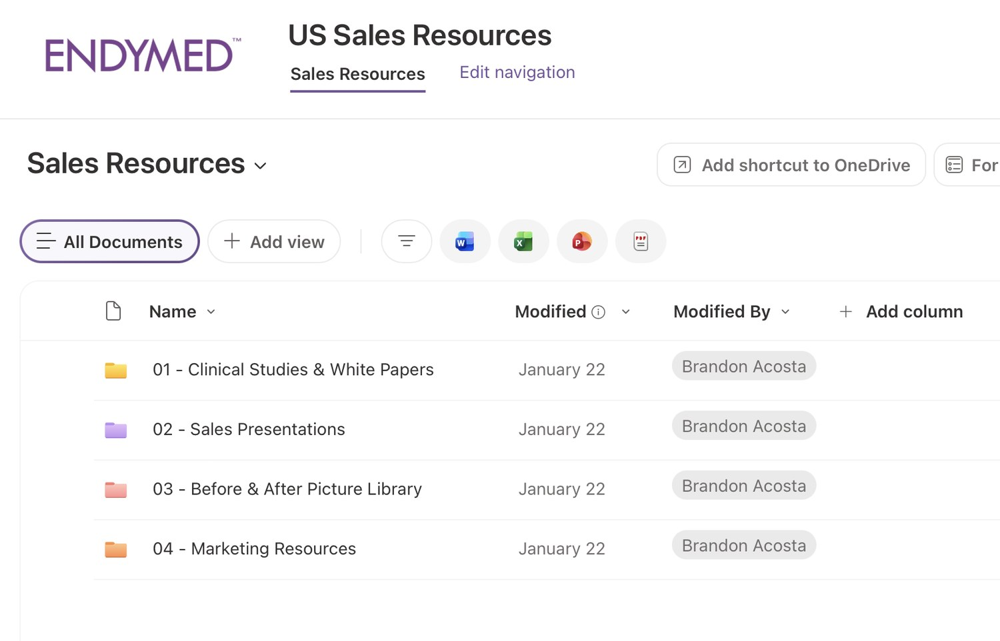

Projects
Five projects demonstrating how I built the systems behind CRM, customer onboarding, commercial operations, automation, and post-sale support.
A CRM built from scratch to give a national team one operating rhythm.
No standardized CRM. No consistent lead lifecycle. Limited pipeline visibility for leadership.
I built a Monday.com CRM from the ground up — one lead lifecycle, and an identical set of boards for every rep. Expand any step to see the evidence:



| New Lead | Captured, not yet worked |
| Contacted | Initial outreach made |
| Engaged | Two-way conversation underway |
| Qualified | Fit and intent confirmed — ready for a deal |
| Follow-Up Later | Not now; scheduled to revisit |
| Unqualified | Not a fit; archived |

| 25% | Feeder / Lead Developed |
| 50% | Scheduled Demo or Presentation |
| 75% | Completed Demo or Presentation |
| 90% | Potential Revenue for Current Month |
| 95% | Signed PQ |
| 100% | Deal Closed and Shipped |

Leadership gained a live managerial dashboard — one standardized commercial operating rhythm across the whole team.

One system turned a scattered, invisible pipeline into a standardized operating rhythm that leadership could see in real time.
One repeatable journey from signed deal to a certified, supported customer.
The customer journey became fragmented after the deal was signed — fulfillment, financing, installation, training, and marketing handoffs were disconnected.
I built a client onboarding board, triggered at closed-won, that runs every customer through one standardized path — device, funding, shipping, installation, and training dates all tracked in a single shared view. It's the operational hub the whole handoff flows through.

One standardized path. Every customer moves through the same seven stages:
Every touchpoint uses a standardized template and resource set, delivered automatically during onboarding.
Congratulations on adding the EndyMed PRO MAX system to your practice. Your next step is to schedule your in-person clinical training — a hands-on, full-day session with your assigned clinical trainer (typically 9:00 AM–4:00 PM).
Please reply with two to three full-day dates over the next two weeks, and the names and roles of each participant. A preparation folder with the schedule, prep guide, and protocols is linked below.
Recreated from the live template — client and trainer details shown as placeholders.
One shared resource folder. The same prepared materials deliver from a single governed folder during onboarding — a Preparing for Clinical Training guide, the training schedule, protocols and quick-reference guides, certificates, and support contacts — so every customer arrives ready for the same experience.
The prep guide every customer receives. A standardized two-page guide — training prep and the full-day schedule — that sets the same expectation for every practice:

Fulfillment, clinical, and marketing work from one shared board.
Standard templates and triggers remove the back-and-forth.
Every customer starts the same, well-supported way.
Every customer now moves through the same guided, automated journey — from signed deal to certified and supported.
A consulting-style analysis that turned a scattered install base into a ranked target list.
Revenue needed to grow from the existing install base — but the data to target it was scattered across systems.
I consolidated the install base and scored it, then translated the analysis into a prioritized re-engagement strategy.
The analysis became EndyMed's 2026 re-engagement strategy, presented to leadership. Redacted deck:
A scattered install base became a ranked, board-ready re-engagement strategy leadership could act on.
From a 30–60 minute manual quote to seconds, with cleaner data.
Manual PQ creation. Incomplete submissions. Manual pricing on every agreement.
Reps complete a standardized, required-field request — no PQ can be created until it's complete. On submission, an automated workflow builds the agreement end to end:
The request form. The standardized, required-field intake that kicks it all off — scroll through it below.
The automation generates a completed approval email with pricing, terms, warranty, and agreement language already populated — and attaches a spreadsheet copy of the Purchase Agreement for review.
A new PRO MAX purchase quote has been generated from the PQ Request Form.
Company: [Client practice]
Contact: [Provider]
Sales Rep: [Assigned rep]
System: PRO MAX
Total (before tax + shipping): [redacted]
A 30–60 minute manual quote became a validated, error-resistant workflow that runs in seconds.
Turning tribal knowledge into scalable, documented systems.
Too many processes relied on tribal knowledge — inconsistent, hard to scale, and dependent on who happened to be handling them.
I organized operating documentation and enablement into four scalable systems:
SOPs, agreements, and protocols in one governed library.
Presentations, studies, and field resources reps can rely on.
Prep materials, schedules, and certificates, standardized.
Documented, repeatable procedures for post-sale issues.


Deep dive — Replacement Tip Request. I replaced inconsistent, case-by-case replacement decisions with one repeatable, documented SOP.
The same process runs the same way, every time.
Decisions are written down and auditable.
Less dependence on any single person's knowledge.
Every workflow has a defined owner and trigger.
Operations that once depended on individuals now run as documented, auditable systems that scale.